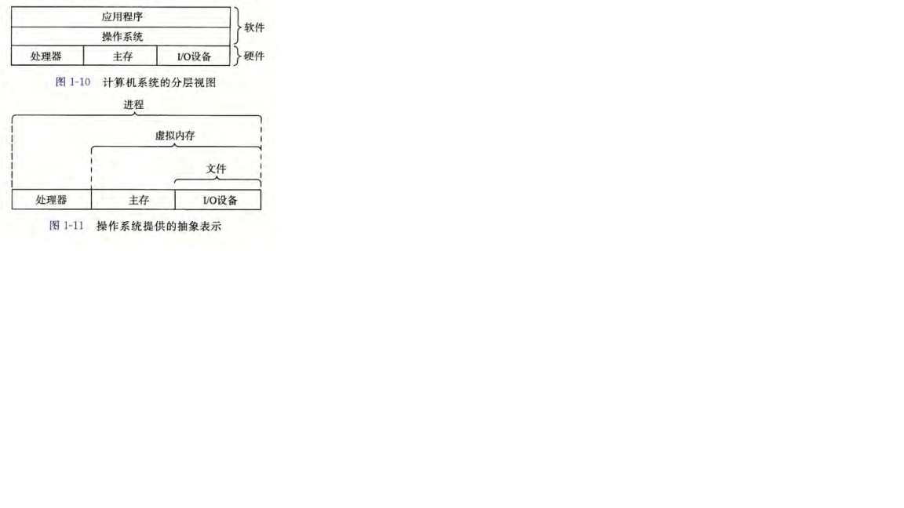

计算器组成
硬件

总线
贯穿整个系统的是一组电子管道，称作总线 它携带信息字节并负责在各个部件间传递。通常总线被设计成传送定长的字节块 ，也就是字（word)。 字中的字节数（即字长） 是一个基本的系统参数，各个系统中都不尽相同。现在的大多数机器字长要么是 4 个字节（32位）， 要么是 8 个字节(64 位）。
I/O设备
1/〇(输入/输出）设备是系统与外部世界的联系通道。
每个 I/O 设备都通过一个控制 器或适 配器与 I/O 总线相连。控制器和适配器之间的区别主要在于它们的封装方式。
控制器是 I/O 设备本身或者系统的主印制电路板（通常称作
主板)上的芯片组。
适配器则是一块插在主板插槽上的卡。
主存
主存是一个临时存储设备， 在处理器执行程序时，用来存放程序和程序处理的数据。 从物理上来说， 主存是由一组动态随机存取存储器(DRAM)芯片组成的。 从逻辑上来说，存储器是一个线性的字节数组， 每个字节都有其唯一的地址（数组索引）， 这些地址是从零开始的。
处理器（CPU)
中央处理单元, 简称处理器， 是解释（或执行） 存储在主存中指令的引擎。 处理器的核心是一个大小为一个字的存储设备（或寄存器 ）， 称为程序 计数器（PC)。 在任何时刻， PC 都指向主存中的某条机器语言指令（即含有该条指令的地址） 。
从系统通电开始， 直到系统断电，处理器一直在不断地执行程序计数器指向的指令，再更新程序计数器， 使其指向下一条指令。处理器看上去是按照一个非常简单的指令执行模型来操作的，这个模型是由指令集架构决定的。在这个模型中，指令按照严格的顺序执
行，而执行一条指令包含执行一系列的步骤。处理器从程序计数器指向的内存处读取指令，解释指令中的位， 执行该指令指示的简单操作，然后更新 PCÿ 使其指向下一条指令，而这条指令并不一定和在内存中刚刚执行的指令相邻。
寄存器文件是一个小的存储设备，由一些单个字长的寄存器组成，每个寄存器都有唯一的名字。 ALU 计算新的 数据和 地址值。下面是一些简单 操作的例子，CPU 在指令的要求下可能会执行这些操作。
- 加载： 从主存复制一个字节或者一个字到寄存器，以覆盖寄存器原来的内容。
- 存储： 从寄存器复制一个字节或者一个字到主存的某个位置， 以覆盖这个位置上原来的内容。
- 操作： 把两个寄存器的内容复制到 ALU, ALU 对这两个字做算术运算，并将结果存放到一个寄存器中，以覆盖该寄存器中原来的内容。
- 跳转：从指令本身中抽取一个字，并将这个字复制到程序计数器（PC)中， 以覆盖PC 中原来的值 。
指令集架构描述的是每条机器代码指令的效果； 而微体系结构描述的是处理器实际上是如何实现的。
高速缓存
根据机械原理，较大的存储设备要比较小的存储设备运行得慢，而快速设备的造价远高于同类的低速设备。 比如说，一个典型系统上的磁盘驱动器可能比主存大 1000 倍， 但是对处理器而言，从磁盘驱动器上读取一个字的时间开销要比从主存中读取的开销大 1000万倍。
类似地，一个典型的寄存器文件只存储几百字节的信息，而主存里可存放几十亿字节。然而，处理器从寄存器文件中读数据比从 主存中读取几乎要快 100 倍。 更麻烦的是，随着这些年半导体技术的进步，这种处理 器与主存之间的差距还在持续增大。加快处理器
的运行速度比加快主存的运行速度要容易和便宜得多。
针对这种处理器与主存之间的差异，系统设计者采用了更小更快的存储设备，称为高速缓存存储器（cache memory, 简称为 cache 或高速缓存）， 作为暂时的集结区域， 存放处理器近期可能会需要的信息。

上图展示了一个典型系统中的髙速缓存存储器。位于处理
器芯片上的 L1 高速缓存的容量可以达到数万字节，访问速度几乎和访问寄存器文件一样快。 一个容量为数十万到数百万字节的更大的 L2 高速缓存通过一条特殊的总线连接到处理器。进程访问 L2 高速缓存的时间要比访问 L1 高速缓存的时间长 5 倍，但是这仍然比访
问主存的时间快 5〜10 倍。 L1 和 L2 高速缓存是用一种叫做静态随机访问存储器（SRAM)的硬件技术实现的。比较新的、处理能力更强大的系统甚至有三级高速缓存： LI,L2 和L3。系统可以获得一个很大的存储器，同时访问速度也很快， 原因是利用了高速缓存的局部性原理，即程序具有访问局部区域里的数据和代码的趋势。 通过让高速缓存里存放可能经常访问的数据，大部分的内存操作都能在快速的高速缓存中完成 。
存储设备形成层次结构
每个计算机系统中的存储设备都被组织成了一个存储器层次结构，在这个层次结构中，从上至下，设备的访问速度越来越慢、 容量越来越大，并且每字节的造价也越来越便宜。寄存器文件在层次结
构中位于最顶部，也就是第 0级或记为 L0这里我们展示的是三层高 速缓存 L1 到 L3,占据存储器层次结构的第 1 层到第 3 层。主存在第 4 层，以此类推。

存储器层次结构的主要思想是上一层的存储器作为低一层存储器的高速缓存。因此，寄存器文件就是 L1 的高速缓存， L1 是 L2 的高速缓存， L2 是 L3 的高速缓存， L3 是主存的高速缓存，而主存又是磁盘的高速缓存。 在某些具有分布式文件系统的网络系统中，本
地磁盘就是存储在其他系统中磁盘上的数据的高速缓存。
操作系统管理硬件
操作系统有两个基本功能：
基本功能
- 防止硬件被失控的应用程序滥用
- 向应用程序提供简单一致的机制来控制复杂而又通常大不相同的低级硬件设备。
操作系统通过几个基本的抽象概念（进程、虚拟内存和文件） 来实现这两个功能。
操作系统
进程
进程是操作系统对一个正在运行的程序的一种抽象。在一个系统上可以同时运行多个进程，而每个进程都好像在独占地使用硬件。而并发运行，则是说一个进程的指令和另一个进程的指令是交错执行的。
无论是在单核还是多核系统中，一个 CPU 看上去都像是在并发地执行多个进程，这是通过处理器在进程间切换来实现的。操作系统实现这种交错执行的机制称为上下文切换。

线程
一个进程实际上可以由多个称为线程的执行单元组成，每个线程都运行在进程的上下文中， 并共享同样的代码和全局数据。
虚拟内存
虚拟内存是一个抽象概念，它为每个进程提供了一个假象， 即每个进程都在独占地使用主存。每个进程看到的内存都是一致的，称为虚拟地址空间。

文件
文件就是字节序列，仅此而已。每个 I/O 设备，包括磁盘、键盘、显示器， 甚至网络，都可以看成是文件。系统中的所有输人输出都是通过使用一小组称为 Unix I/O 的系统函数调用读写文件来实现的。
文件这个简单而精致的概念是非常强大的，因为它向应用程序提供了一个统一的视图， 来看待系统中可能含有的所有各式各样的 I/O 设备。例如，处理磁盘文件内容的应用程序员可以非常幸福，因为他们无须了解具体的磁盘技术。进一步说，同一个程序可以在
使用不同磁盘技术的不同系统上运行。
并发和并行
数字计算机的整个历史中，有两个需求是驱动进步的持续动力： 一个是我们想要计算机做得更多，另一个是我们想要计算机运行得更快。当处理器能够同时做更多的事情时，这两个因素都会改进。
并发(concurrency)是一个通用的概念， 指一个同时具有多个活动的系统；
并行（parallelism)指的是用并发来使一个系统运行得更快。并行可以在计算机系统的多个抽象层次上运用。
在此，我们按照系统层次结构中由高到低的顺序重点强调三个层次。
线程级并发
构建在进程这个抽象之上，我们能够设计出同时有多个程序执行的系统，这就导致了并发。使用线程，我们甚至能够在一个进程中执行多个控制流。
当构建一个由单操作系统内核控制的多处理器组成的系统时，我们就得到了一个多处理器系统。
多核处理器是将多个 CPU(称为“核”)集成到一个集成电路芯片上。

信息表示和处理
信息存储
大多数计算机使用 8 位的块，或者字节（byte), 作为最小的可寻址的内存单位，而不是访问内存中单独的位。机器级程序将内存视为一个非常大的字节数组， 称为虚拟内存(virtual memory) 内存的每个 字节都由一个唯一的数字来 标识， 称为它的地址（address) 所有可能地址的集合就称为虚拟地址空间（virtual address space)。
进制
在生活中，我们通常都是使用阿拉伯数字计数的，也就是10进制，以10为单位，遇10进一，所以是由0，1，2、3、4、5、6、7、8、9这个10个数字组成的；而在计算机中，计算机是无法识别10进制数的，它只能识别0和1，也就是二进制，由0、1两位数字组成，其运算规则是逢二进一。数字在计算机底层都以二进制形式存在，计算机则是以补码的形式保存所有的整数。
进制就是进位制，是人们规定的一种数字进位方法；对于任何一种进制（X进制），都表示某一位置上的数运算时是逢X进一位，如：二进制就是逢二进一，八进制就是逢八进一， 十进制是逢十进一，十六进制是逢十六进一，以此类推。
二进制表示法
由0，1组成，运算规律是逢二进一，计算机只能识别二进制表示的数据；
八进制表示法
由0、1、2、3、4、5、6、7组成，运算规律是逢八进一；
十进制表示法
由0，1，2、3、4、5、6、7、8、9组成，运算规律是逢十进一；
十六进制表示法
由数字0～9以及字母A，B，C，D，E，F组成，运算规律是逢十六进一；
进制转换
十进制和二进制之间相互转换
十进制转二进制
对于整数部分，用被除数反复除以2，除第一次外，每次除以2均取前一次商的整数部分作被除数并依次记下每次的余数。
所得到的商的最后一位余数是所求二进制数的最高位。

二进制转十进制
进制数第1位的权值是2的0次方，第2位的权值是2的1次方，第2位的权值是2的2次方，依次计算，公式：第N位 * 2的N-1次方，结果再相加便是最后结果。
二进制数字存储单位
在计算机的数据存储系统中，数据存储的最小单位是位，位简记为bit，也称为比特；每个二进制数字0或1就是一个位(bit)，也就是一比特；也可以把二进制中的0和1看做开关中的“开”和“关”，1表示“开”，0表示“关”。另外，也可以把0和1的数据带到道家的阴阳八卦中去理解，0表示阴，1表示阳，0和1的转换就是阴阳的交替。 8 bit（位）= 1B，也就是一个字节（Byte），然而1KB却不等于1000B。
下面是详细的计算规则：
1B（byte，字节）= 8 bit；
1KB（Kibibyte，千字节）= 1024B = 2^10 B；
1MB（Mebibyte，兆字节，百万字节，简称“兆”）= 1024KB = 2^20 B；
1GB（Gigabyte，吉字节，十亿字节，又称“千兆”）= 1024MB = 2^30 B；
1TB（Terabyte，万亿字节，太字节）= 1024GB = 2^40 B；
1PB（Petabyte，千万亿字节，拍字节）= 1024TB = 2^50 B；
以上这些是二进制数的存储单位计算规则，而在硬盘容量也能看到类似的单位，但是硬盘的容量通常是以十进制标识的，所以显示有500G容量的硬盘实际容量却不足500G。
原码、反码和补码
在计算机内，有符号数（这里的符号指的是正负符号，有符号数指的就是正负数）有3种表示法：原码、反码和补码，所有数据的运算都是采用补码进行的，也就是基于补码来做计算。 在二进制中，二进制数的最左边为最高位，根据二进制定点表示法，二进制最高位为符号位，“0”表示正，“1”表示负，其余位表示数值的大小。也就是说二进制最左边的数决定了这个数是正数，还是负数，正数的符号位是0，负数的符号位是
1。 正数的原码，反码，补码都相同；
负数的则有不同的计算规则，详情如下：
原码：负数的原码和正数的原码差别就在最高位，正数的符号位是0，负数的符号位是1；
反码：负数的反码是对其原码逐位取反（0变1，1变0），但符号位（最高位）除外，因为最高位（符号位）是不能被改变的；
补码：负数的补码是在其反码的末位加1（逢二进一）；
需要注意的是：求反码的时候，最高位（符号位）是不能被改变的， 正数的符号位是0，负数的符号位是1。